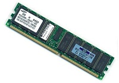
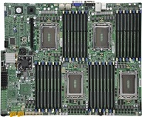

شما دروپال را یاد میگیرید، آن را نصب میکنید، پیکربندی میکنید، به تدریج با محیط آن آشنا می شوید و کم کم نیازمندی های خودتان را بهتر می شناسید. سپس به سراغ ماژول ها می روید و سعی میکنید نیازمندی هایتان را با نصب ماژول ها برطرف کنید. بعد از مدت کوتاهی می بینید که سایت تان کند شده است، با صفحه ی سفید (کاملا خالی) روبرو می شوید، خطا های عجیب غریب در سایت تان می بینید و نمی دانید کجای مسیرتان را اشتباه آمده اید.
این مقاله برای شماست. در این مقاله قصد دارم کمی در مورد دروپال توضیح دهم و مسیر را برای شما روشن کنم. تا شناخت بهتری نسبت به دروپال و نیازمندی های آن ییدا کنید و سایت تان را دوباره احیا کنید.
بنا بر تعریف، دروپال، قادر به اجرا بر روی تقریبا هر پلاتفرمی هست. بر روی تمام سیستم عامل ها، اعم از ویندوز، لینوکس، سولاریس، bsd، اندروید، و خانواده ی Unix و هر جایی که php بتواند اجرا شود و افزونه های مورد نیاز دروپال قادر به اجرا باشند، و هر جا که MySQL یا Postgresql یا یک دیتابیس سازگار دیگر قابل اجرا باشد، دروپال نیز می تواند کار کند.
بنا بر جمله ی فوق، دروپال یک سیستم بسیار قابل حمل می باشد. این جمله نشان می دهد که شما دروپال را تقریبا در هر محیطی می توانید استفاده کنید. اما کدام محیط بهینه تر و بهتر است؟ مسئله اینجاست.
من سابقا مجموعه مقالاتی رو در مورد کارایی دروپال و افزایش سرعت آن نوشته بودم. برای این که تکرار مکررات نشود، لطفا به مقالات زیر هم سری بزنید:
در ادامه نیازمندی های دروپال را شرح میدهم و توضیح میدهم که پارامتر های مهم برای اجرای بهینه ی دروپال چیست و راه حل هایی را نیز معرفی خواهم کرد.
و آخر بحث هم سرویس بی نظیر Drupalhost.ir (میزبان دروپال هاست) را معرفی خواهم کرد. و شرح خواهم داد که چگونه دروپال هاست، تمامی استاندارد ها و نیازمندی های دروپال را به بهترین شیوه رعایت کرده است.
حافظه RAM

دروپال 7، طبق راهنما، نیازمند حد اقل 40 مگابایت حافظه ی RAM می باشد. اما این برای یک دروپال تازه نصب شده می باشد. (یعنی بدون هیچ ماژول اضافی)
وقتی چند تا ماژول جدید فعال میکنید، به سرعت با مشکل کمبود حافظه روبرو می شوید. زیرا ماژول های بیشتر، به معنی کدهای بیشتر برای اجرا و در نتیجه ی نیاز به حافظه ی بیشتر می باشد.
برای یک سایت معمولی دروپالی، حد اقل 128 مگابایت حافظه ضروری است. برای سایت های پر بازدید تر، 512 مگابایت یا 750 مگابایت ممکن است لازم باشد. برای یک سایت بسیار سنگین، ممکن است چند گیگابایت حافظه لازم باشد. البته اگر سایت شما جزو این دسته است، باید دنبال ایرادی در سایت تان بگردید. و آن را بهینه کنید.
هارد دیسک
در کامپیوتر همواره کند ترین عنصر، سرعت سایز اجزا را محدود میکند. به این معنی که اگر برای انجام یک کار X، نیاز به انجام کارهای A و B و C به صورت متوالی باشد؛ اگر مثلا کار C از کارهای دیگر کند تر باشد، عامل تعیین کننده، کند ترین بخش سیستم است که به آن bottleneck گفته می شود.
غالبا در سرور ها، کند ترین جزء، هارد دیسک سرور است. خصوصا برای کارهایی که نیاز زیادی به دسترسی به هارد دیسک دارند. مانند تراکنش های دیتابیس.
دروپال به طور پیش فرض، از نظر کارایی دیتابیس بهینه نیست. این به خاطر انعطاف پذیری دروپال در تعریف فیلد ها می باشد. در دروپال 6 ماژول cck را داشتیم و به کمک ماژول cck فیلد های جدید را می توانستیم به نوع های محتوا اضافه کنیم. ماژول cck فیلد های یک نوع محتوا را در یک جدول واحد قرار میداد. و اگر یک فیلد از نوع چند مقداره بود، آن را در یک جدول جداگانه قرار میداد.
اما در دروپال 7، هر فیلد، برای خودش یک جدول مستقل دارد. و از آن بدتر این که یک جدول هم نیست. چند جدول هستند که با هم رابطه دارند.
این یعنی برای لود شدن یک محتوا در دروپال، باید یک Query با تعداد زیادی JOIN اجرا شود. حال هرچه تعداد فیلد ها بیشتر باشد، این موضوع تاثیر بیشتری می گذارد.
البته سیستم caching در دروپال 7 کمک خوبی برای حل این مشکل می کند. اما با این حال همچنان، دیتابیس یکی از منابع اصلی کند کننده ی دروپال است.
برای حل این مشکل باید از دیسک های پر سرعت مانند SSD یا SAS استفاده کرد.
سرعت پردازش
سرعت پردازش، تحت تاثیر سرعت CPU می باشد. می توان از CPU قوی تر استفاده کرد و یا از تکنیک هایی استفاده کرد که پروسه ی دروپال را سبک تر کند. (مانند Opcache)
اجرای PHP به صورت FPM می تواند چگونگی هندل کردن درخواست های php را بهینه کند. همچنین تکنولوژی LSAPI مربوط به وب سرور Litespeed گفته می شود که بهترین سرعت را برای اجرا خواهد داشت.
پروژه ی HHVM توسط فیس بوک توسعه داده شده و یک پلاتفرم مستقل php است (یعنی به جای php از hhvm می شود استفاده کرد) موتور hhvm حدود 30 درصد از php می تواند سریع تر باشد. دروپال به خوبی با hhvm کار میکند، اما هنوز به صورت عمومی توصیه نمی شود که از hhvm برای دروپال استفاده کنید. مگر در یک محیط آزمایشگاهی و تحت نظر. زیرا hhvm به اندازه ی php اصلی تست نشده است.
وب سرور
زمانی که تعداد بازدید ها زیاد باشد، به خصوص که بازدید های همزمان زیاد باشد، آنگاه موضوع وب سرور خودنمایی میکند. یک وب سرور کند، به خصوص که بد پیکربندی شده باشد، در ترافیک و استرس بالا، منابع سرور را هدر می دهد. وب سرور apache در یک ترافیک نسبتا بالا، به راحتی می تواند 95 درصد از حافظه ی ram و cpu سرور را اشغال کند و کاملا سرور را از ارائه ی خدمات بازدارد.
استفاده از یک وب سرور خوب مانند nginx یا litespeed برای یک سایت پر بازدید ضروری است.
همچنین یک revrese-prox-y می تواند ترافیک های بالا را از دوش وب سرور بردارد. یک گزینه ی عالی، استفاده از varnish همراه با nginx می باشد. یا nginx در مقابل nginx (انژین ایکس هم می تواند وب سرور باشد و هم واسط)
شبکه
در مورد سیاست های دولت در خصوص کند کردن اینترنت ایران صحبت نمی کنم. اما اگر سرور داخل ایران باشد، کاربران داخل ایران، سرعت بسیار بیشتری را تجربه خواهند کرد. البته سرور های خارج از کشور هم قابل قبول است. من بهترین سرعت دسترسی از ایران را در سرور های آلمان، آمریکا، و انگلیس مشاهده کردم .و بد ترین کیفیت را در سرور های استرالیا.
سخت افزار
این را باید در اول لیست می آوردم. شاید شما هم از آن دسته باشید که گمان می کنند همه چیز فقط ram و cpu و هارد است.
از این بدتر کسانی هستند که فکر میکنند برای خرید هاست برای سایت شان، تنها میزان فضای هارد و میزان پهنای باند و تعداد دیتابیس و ... مهم هست!!!
شاید گناه از ارائه کننده های هاستینگ باشد که تعرفه های هاست شان را بر اساس چنین پارامتر های مضحکی قیمت گذاری میکنند. مشتری هم گمان میکند که عامل تعیین کننده ی ارزش یک هاست، فضای هارد یا مثلا تعداد ساب دامین است!!
عواملی که یش از این در مقاله مطرح کردم، همگی مهم هستند. اما برخی پارامتر ها هست که نادیده انگاشته می شود ولی دارای اهمیت به سزایی است.
مشخصات سخت افزاری سرور شامل Main board ، گذرگاه های داده و مدل cpu و ...
اگر قصد خرید سخت افزار سرور برای کولوکیشن دارید، حتما با یک متخصص سخت افزار مشاوره کنید.
ابزار های تخصصی دروپال
هر چه تا الان گفتم در مورد یک سرور خوب بود. اما وقتی صحبت راجع به دروپال است، ابزار های تخصصی دروپال حرف زیادی برای گفتن دارند.
یک هاست خوب برای دروپال، دارای دسترسی ssh و drush می باشد. دراش برای هر دروپال کار حرفه ای اوجب واجبات است. همان قدر که firebug یا developer tools برای یک طراح وب ضروری است.
لذا اگر کاربر حرفه ای دروپال هستید، حتما باید هاستی تهیه کنید که دسترسی به ابزار های لازم را به شما می دهد (در غیر این صورت سرور مجازی تهیه کنید)
ابزاری های تخصصی دروپال، عمده ترین ش drush است. اما دسترسی به دستورات mysql و mysqldump و همچنین ابزار های طراحی مانند sass و compass و less و... هم مهم است.
مسائل امنیتی
پیکربندی امنیتی سرور به صورتی که یک سایت از سایت های مجاور آن مستقل باشد، یکی از دغدغه های مهم هاستینگ می باشد. متاسفانه پیکربندی پیش فرض Directadmin و Cpanel و Plesk و سایر پنل های مدیریتی هاستینگ، امنیت کافی را ارائه نمی کنند! (یعنی در سناریو های خاصی، به سادگی قابل نفوذ می باشند)
اما راه هایی برای تنظیم امنیت هاستینگ وجود دارد که از آن جمله می توان به استفاده از jail ها و استفاده از SELinux و ... اشاره کرد. (داخل پرانتز اشاره کنم که برای نصب پنل های هاستینگ، معمولا اولین کار این است که selinux را غیر فعال میکنند. یعنی همان ابتدا خود را خلع سلاح می کنند!!!) برخی نیز برای تامین امنیت، به سرور های مجازی روی می آورند.
سرور مجازی، استقلال و ایزوله بودن سایت از سایت های دیگر را تضمین میکند، اما نوع پیکربندی سرور مجازی، خود پارامتر مهمی در امنیت سایت است که ممکن است نادیده گرفته شود. به همین دلیل، همواره پیکربندی سرور مجازی را به یک فرد متخصص بسپارید.
سرور مجازی یا هاستینگ اشتراکی؟
 بعضی ها خیال میکنند که سرور مجازی سرعت بیشتری از هاست های اشتراکی دارد. یا مثلا کیفیت بالاتری دارد. من همینجا، اکیدا این نظر را رد میکنم. تاکید میکنم که سرور مجازی هیچ ربطی به سرعت و کیفیت ندارد.
بعضی ها خیال میکنند که سرور مجازی سرعت بیشتری از هاست های اشتراکی دارد. یا مثلا کیفیت بالاتری دارد. من همینجا، اکیدا این نظر را رد میکنم. تاکید میکنم که سرور مجازی هیچ ربطی به سرعت و کیفیت ندارد.
تنها مزیتی که سرور مجازی دارد، این است که امنیت بالاتری را ارائه میکند (به خاطر ایزوله بودن منابع). اما کیفیت، بستگی به سخت افزار و cpu و سایر پارامتر هایی که قبلا گفتم دارد. صرفا استفاده از vps به هیچ وجه به معنی افزایش کیفیت نیست. چه بسا به دلیل سر بار های مجازی سازی، افت کیفیت هم داشته باشد
یک هاست اشتراکی که بر روی یک سرور اختصاصی قدرتمند که به درستی پیکربندی شده قرار دارد، از یک سرور مجازی که بر روی سرور ضعیف قرار گرفته، بسیار بهتر عمل میکند.
دروپال هاست چیست؟
دروپال هاست، سرویس است که ما پس از سال ها تجربه و تحقیق و مطالعه، تهیه کرده ایم. سخت افزار قدرتمند، پیکربندی بهینه ی سرور، ایزوله بودن منابع برای هر سایت، دسترسی به ابزار های تخصصی دروپال و پشتیبانی تخصصی، دوپال هاست را به بهترین گزینه برای میزبانی سایت های دروپالی تبدیل کرده است.
هزینه های دروپال هاست، به اندازه ی هزینه ی خرید یک VPS می باشد. اما آنچه که در ازای این هزینه دریافت میکنید، چیزی خیلی فراتر از یک VPS است. شما یک میزبان بسیار قدرتمند و سریع و بهینه دریافت میکنید که مانند این است که یک سرور اختصاصی پیکربندی شده مخصوص دروپال توسط افراد متخصص خریداری کرده باشید.
کیفیت و سرعت هاستینگ دروپال هاست، از این که خودتان سرور اختصاصی خریداری کنید هم بیشتر است. (چون به خوبی پیکربندی شده است)
دروپال هاست، بهترین گزینه برای هر دروپال کار حرفه ای است. Drupalhost.ir is extremely awesome